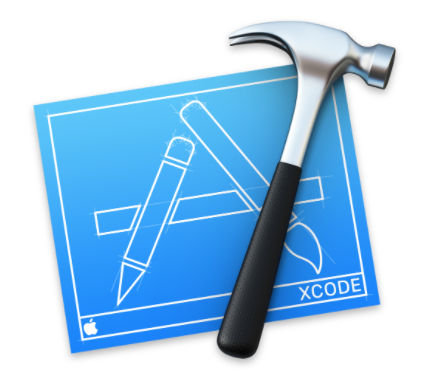

1. Intro to Xcode and Swift 4. Your first iOS app!
Class Information
Instructors
wcaruso@mit.edu
modesitt@mit.edu
Discussions and Questions on the course Piazza Page.
Goals
This course is meant to be an introduction to the Swift programming language through building iOS applications. By the end of course, it is expected that you will be able to create basic iOS applications from scratch using Xcode and the Cocoa Touch framework and third party libraries.
Grading
Passing for the class will be a 60%.
| Grade | Assignment |
|---|---|
| 50% | Attendance |
| 50% | Final Project |
A Brief History of iOS
The iPhone was first revealed by Steve Jobs on June 29, 2007 at Macworld in an epic presentation that you should watch here on YouTube. Please watch the whole 10 minutes, trust me - it's worth it. iPhone's fancy User Interface introduced new modalities of interaction to mobile computing, especially Multitouch. Apple has made iOS one of the most feature-rich and well-supported platforms on the market with their large developer and user communities as well as it's continued support.
Hardware
The iPhone has a capacitive touchscreen that's designed for a bare finger, or multiple fingers for multi-touch sensing. It also contains a ton of sensors, here's a list:
- Speaker and microphone
- Multitouch
- Proximity sensor
- Ambient light sensor
- Accelerometer
- Magnetometer
- Gyroscopic sensor
- Radio
- Fingerprint sensor
- Barometer
- 3D Touch (Force)
- Facial recognition sensor
Each sensor plays a different role in the User Experience, and we'll learn how to read these sensors and how to use the information to make cool apps. iPhone has some pretty impressive computing power under the hood. The newest model, iPhone X, hosts the A11 bionic chip which features a six-core CPU and a three-core GPU that have been optimized for machine learning, AR apps and immersive 3D games. The chip also features a neural engine that can perform up to 600 billion operations per second for rich real-time experiences.
User Interface
iOS is based upon direct manipulation. Interface control elements consist of sliders, switches, buttons and gestures such as swipe, tap, pinch, and reverse pinch. Like all good platforms, iOS has a set of great Human Interface Guidelines. Check them out, and see how the principals both make sense and play into your everyday experience with iOS. No need to read this in it's entirety, as a user a lot of these principals will be familiar.
We'll build apps with UIKit, a programming framework that defines common interface elements grouped into three categories:
- Bars. Tell people where they are in your app, provide navigation, and may contain buttons or other elements for initiating actions and communicating information.
- Views. Contain the primary content people see in your app, such as text, graphics, animations, and interactive elements. Views can enable behaviors such as scrolling, insertion, deletion, and arrangement.
- Controls. Initiate actions and convey information. Buttons, switches, text fields, and progress indicators are examples of controls.
Accessibility
iOS offers a great experience for users of Assistive Technologies and it is our responsibility as developers to implement Apple's UIAccessibility protocols (which is very easy if we stick to UIKit) to make our apps accessible.
- https://en.wikipedia.org/wiki/IPhone
- https://www.pinterest.com/pin/706291154033496539/
Platform Components
Tools
- Xcode 9
- Instruments
Languages
- Objective-C
- Swift 4
Frameworks
- Foundation
- UIKit
- Core Motion
- Map Kit
- Core ML
- etc...
Check out Apple's Documentation for a full list.
Design Strategy: Model View Controller
The Model View Controller paradigm:

The realistic Coaco MVC relationship

- https://medium.com/ios-os-x-development/ios-architecture-patterns-ecba4c38de52
Introduction to Xcode 
Xcode offers a plethora of features including editors, Interface Builder, smart searching, source control, the Assistant Editor, testing, debugging (LLDB), customization and so much more. We'll walk through this complex interface together, and show you how to use various components to build apps. Here is just a quick overview:
Anatomy of an Xcode Project
Creating a new Xcode project is as easy as File → New → Project, and then selecting the appropriate starter project. Xcode will automatically create the files you need to start with.
Project Window
- Navigator. Primary mechanism for controlling what you see in the main area of the project window. Navigator pane itself can display nine different sets of information represented by the nine icons across its top. You can also filter what you see here with the search feature.
- Editor. This is where you get actual work done, reading and writing your code or designing the interface in a Storyboard. When using the Assistant Editor, you 'll have a split-screen view of the two files, most often he Storyboard and a corresponding Controller or Class.
- Utilities. Contains inspectors that provide information about the current selection or its settings; in some cases, these inspectors let you change those settings.
- Debugger. This pane contains information related to lldb and shows the program state when using Breakpoints and contained the console where print and debug statements appear.
Project Files and Dependencies
In the figure above, the MyFirstiOSApp folder
contains the raw code for our project. The Storyboard is our UI, and is on the same level as
corresponding View Controllers and classes. Other files, such as Model Classes, will naturally
appear in this level. The Info.plist, or information property list, file is a structured text file
that contains essential configuration information for our project such as Entitlements.
Products by convention holds an
automatically generated reference to the
built app.
Target
A target is a collection of parts along with rules and settings for how to build a product from
them. It is a major determinant of how an app is built. Whenever you build, what you’re really
building is a target. In our first app, there is only one target. But there could be more than one
target, under certain circumstances. For example, you might want to write an app that can be built
as an iPhone app or as an iPad app — two different apps that share a lot of the same code. So you
might want one project containing two targets.
Building the Project into an App
To build a project is to compile its code and
assemble the compiled code, together with various resources, into the actual app. Typically, if
you want to know whether your code compiles and your project is consistently and correctly
constructed, you’ll build the project (Product → Build). To run a project is to launch the built
app, in the Simulator or on a connected device, first select the device in the drop down menu and
then run the project (Product → Run -or- the big Play Button ▶ in the upper
left), which automatically builds first if necessary. If your app has errors, it won't be able to
build and lldb (debugger) will throw what went wrong in the console.
- http://www.apeth.com/iOSBook/ch06.html
Introduction to Swift

Swift is a multi-purpose and awesome programming language introduced by Apple in 2014 for
iOS and it's other platforms. It works fluently with the large body of existing Objective-C code
written for Apple products. Swift is 100% open source, and you can see the source for yourself
here.
We'll be using Apple's Official guide to Swift, The Swift Programming Language.
Reading
Be sure to read through the entire Guided Tour of Swift. We'll be writing Swift on this level the first day of class.
Playgrounds
Swift Playgrounds are a great way to quickly experiment with Swift and it's features. You can create a new playground in Xcode and see live results of your code on the right hand side. For good measure, here is how you print "Hello, World" to the console:
print("Hello, world!")import UIKit
/* Constants and Variables:
- declare constants with the "let" keyword
- declare variables with the "var" keyword
*/
let maximumNumberOfLoginAttempts = 10 // constant, read only, cannot be reassigned
var currentLoginAttempt = 0 // read and write, can be reassigned
//maximumNumberOfLoginAttempts += 1
currentLoginAttempt += 1
var x = 0.0, y = 0.0, z = 0.0 // tuple declaration
/* Variables are strongly type
- there is, however, type inference!
*/
var greeting: String = "Hello"
//greeting = 0
//currentLoginAttempt = "A lot"
/* Variable Names
- the swift convention is camelCase
- variable names can include almost any character
*/
let π = 3.14159
let 你好 = "你好世界"
let 🐶🐮 = "dogcow"
/* Printing Variables
- the print function
- escaping variable values with \()
*/
print(greeting)
print(greeting + ", World!")
print("\(greeting), World!")
/* Optionals and nil
- nil is known by many names: null, None, nill, nata, notin'
- strongly types regular variables cannot be nil
- Optionals are a very common idea in swift
- A wrapper around a value, allowing it to be nothing or something
- denoted by the question mark
*/
var mit: String = "Massachusetts Institue of Technology"
//mit = nil
var ihtfp: String? = nil
ihtfp = "I have truly found paradise"
ihtfp = "I hate this fucking place"
var unwrapped_ihtfp: String = ihtfp!
ihtfp = nil
//unwrapped_ihtfp = ihtfp!
/* Optional Binding
- you can use optional binding to find out whether or not
an optional contains a value, and if so, to make the value
avaliable
*/
var possibleNumber: Int? = 4
//possibleNumber = nil
if let actualNumber = possibleNumber {
print("The actual number (of type Int) is \(actualNumber)")
}
/* Optionals Continued:
- optionals can also be implicitly unwrapped
*/
let assumedString: String! = "An implicitly unwrapped optional string."
/* Data Structures
- the core of swift data stuctures are Classes, Structures, and Enumerations
- similarities:
- declaritive syntax
- properties and functions
- initializers
- differences:
- inhertiance
- value type (struct, enum) vs Reference type (class)
- Value (struct and enum)
- copied when passed to a function as an argument
- copied when assigned to a different variable
- Immutable if assigned with the let keyword
- any function that mutates a struct or enum must be marked with mutating
- Reference
- stored in the heap, and automatically reference counted
- constant pointers to the class with let can still mutate the inner state
*/
/* Enumerations */
enum LightSaberColor {
case red
case blue
case green
case purple
}
enum Direction {
case north
case east
case west
case south
}
public enum HTTPMethod {
case get
case post
// a function in swift
public func getHeaders() -> [String: Any] {
switch self {
case .get:
return ["Content-Type": "application/json"]
case .post:
return ["Content-Type": "application/json",
"Content-Payload": "{\"key\":\"value\"}"]
}
}
// TODO computed properties
public var name: String {
switch self {
case .get:
return "GET"
case .post:
return "POST"
}
}
}
/* Classes */
class ForceSensitiveBeing {
var lightSaberColor: LightSaberColor? = nil
}
class Jedi: ForceSensitiveBeing {
init(withLightSaberColor lsc: LightSaberColor) {
super.init()
lightSaberColor = lsc
}
}
class MaceWindu: Jedi {
override init(withLightSaberColor lsc: LightSaberColor) {
super.init(withLightSaberColor: lsc)
lightSaberColor = .purple
}
}
/* Casting
- you can cast objects in swift with the as keyword
- as? casts them as an optional
- as! casts them as an implicitly unrapped optional (dont use)
- as? is almost always used with an if let!
*/
let any: Any? = 4
let number: Int? = any as? Int
let number2: Int = any as! Int
Building an iOS App
Let's jump into iOS development together and learn by doing. Together, we'll build a basic iOS application from scratch and introduce all the tools along the way. We'll go over the following things together:
- Creating a Project in Xcode 9
- Building a UI with Storyboard
- The iOS Simulator (and uploading to a device)
- print (outputting to the console using \() notation)
- Defining a class in Swift, including how to specify instance variables and methods
- Connecting properties (instance variables) from our Swift code to the UI (outlets)
- Connecting UI elements to invoke methods in our Swift code (actions)
- Accessing iOS documentation from our code
- Optionals (?, unwrapping implicitly by declaring with !, and unwrapping explicitly with ! and if let)
- Accessibility Labels
Summary
At the end of each reading we'll recap some main topics that were covered. Here are some key points that we went over in our Intro to Xcode and Swift:
- Xcode is used to create native iOS applications and offers many features for a nice development experience
- Swift is Apple's open source programming languages usd to make iOS apps